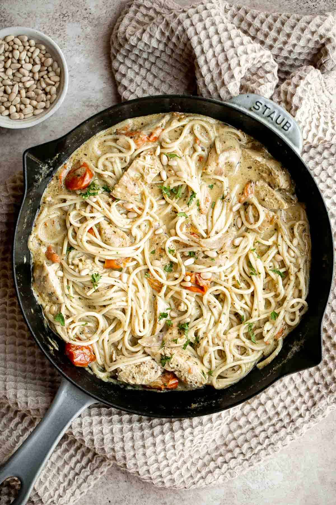
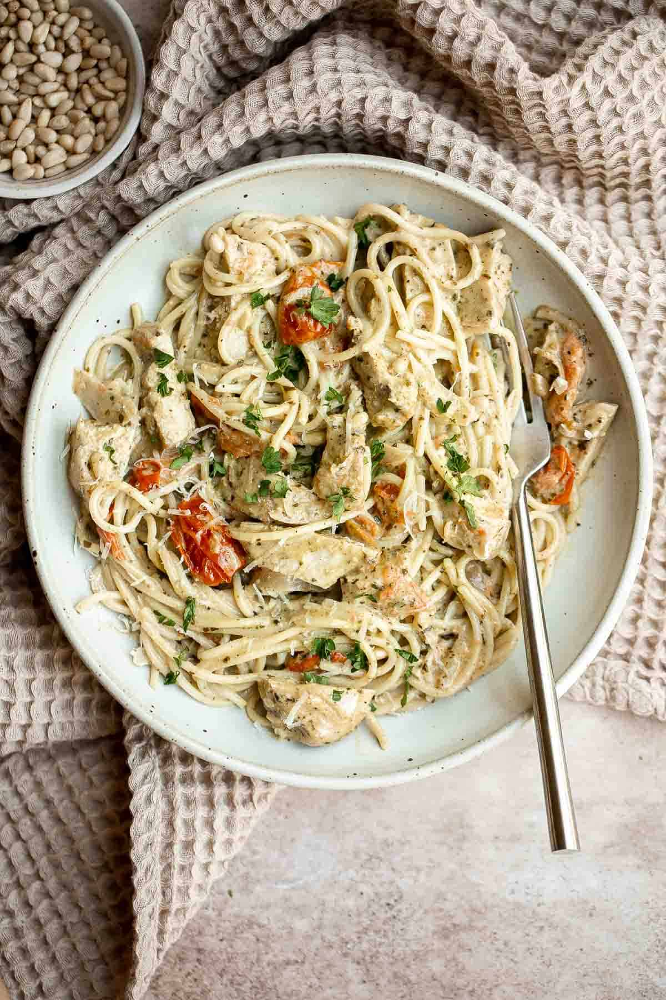

CHICKEN PENNE PASTA
Chicken penne pasta is a quick and easy dinner that is delicious, creamy, and flavorful. Perfectly seared chicken is sliced and tossed into a creamy white sauce that with penne pasta in under 30 minutes. This creamy chicken pasta is a simple and classic Italian meal and family favorite, and leftovers are great for the next meal.
This is one of the easiest and quickest pasta recipes you will make ever!.
If you are all about those quick and easy meals, then you`ve got to try this.
Ingredients
To make this delicious Chicken Penne Pasta, you will need the following ingredients (full quantities in recipe card below):
-
Penne pasta - or substitute with any pasta of your choice
-
Salt and Pepper
- Vegetable oil
- Butter
- Garlic
- All-purpose flour
- Heavy cream
- Chicken broth
- Parmesan cheese
- Fresh parsley for garish.
How to make this lovely pasta...
Making this pasta is welly easy. Just follow the steps below.
-
Boil pasta. Bring a large pot of salted water to a boil over medium-high heat. Add penne pasta and cook until al dente according to package directions, about 8-10 minutes. Reserve ½ cup of the hot pasta water in a bowl (if using instead of chicken stock). Drain the pasta and set aside.
-
Sear chicken. Use a paper towel to pat the chicken breasts completely dry. Season with salt and pepper. In a large skillet, heat oil over medium-high heat until the hot oil sizzles, about 1-2 minutes. Add chicken and sear until golden brown, 6-8 minutes per side.
-
Slice chicken. Slice the chicken into ½-inch strips, transfer onto a plate, and cover with aluminium foil to stay moist..
-
Make the creamy sauce. In the same skillet, add butter and garlic and sauté until fragrant, about 1 minute. Add flour and cook until thickened into a paste, about 1 minute. Add heavy cream, chicken broth (or reserved hot pasta water), and Parmesan cheese. Bring the sauce to a simmer over medium heat and simmer for 2-3 minutes until thickened to a desired consistency, stirring occasionally. Season with salt and pepper to taste.
-
Toss in chicken Add the chicken and pasta to the skillet and toss well to coat. Garnish with parsley and serve immediately.


Tips
-
How to store: Allow leftover chicken penne pasta to cool in the pan or in a container with the lid off. Once the pasta reaches room temperature, place it in an airtight container in the fridge for 3-4 days. If you don’t allow it to cool before covering, the pasta can become mushy.
-
How to reheat: Reheat in a pan on the stove over medium-low heat until warmed through. If the sauce has thickened too much in the fridge, add a splash of water. You can also reheat in the microwave in 30 second increments until warmed through.
Home Page